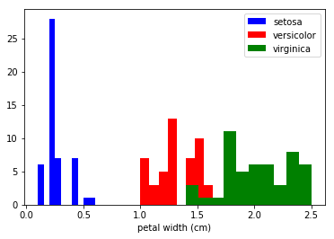
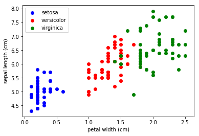
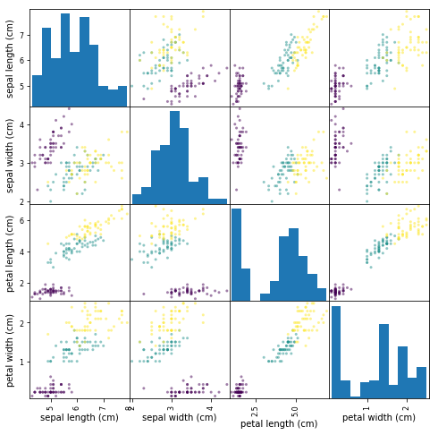
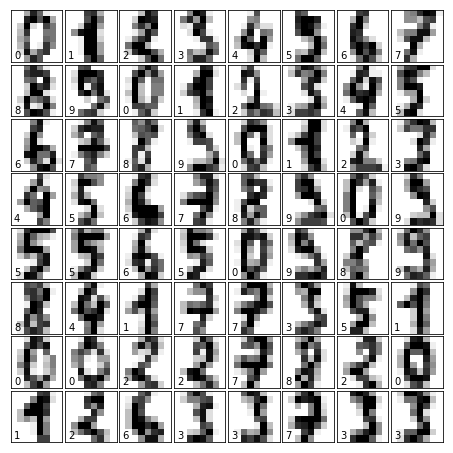

scikit-笔记02:数据表示与机器学习
Table of Contents
- 1. Representation and Visualization of Data
- 1.1. Data in scikit-learn
- 1.1.1. A Simple Example: the Iris Dataset
- 1.1.2. Quick Question:
- 1.1.3. Loading the Iris Data with Scikit-learn
- 1.1.4. background: iris dataset
- 1.1.5. from
sklearn.datasetstosklearn.utils.Bunchtonp.array - 1.1.6. An aside: scatterplot matrices
- 1.1.7. Other Available Data
- 1.1.8. Loading Digits Data
- 1.1. Data in scikit-learn
- 2. Misc tools
1 Representation and Visualization of Data EXERCISE
Machine learning is about fitting models to data; for that reason, we'll start by discussing how data can be represented in order to be understood by the computer. Along with this, we'll build on our matplotlib examples from the previous section and show some examples of how to visualize data.
1.1 Data in scikit-learn EXERCISE
Data in scikit-learn, with very few exceptions, is assumed to be stored as a two-dimensional array, of shape [n_samples, n_features]. Many algorithms also accept scipy.sparse matrices of the same shape.
n_samples: The number of samples: each sample is an item to process (e.g. classify). A sample can be a document, a picture, a sound, a video, an astronomical object, a row in database or CSV file, or whatever you can describe with a fixed set of quantitative traits.n_features: The number of features or distinct traits that can be used to describe each item in a quantitative manner. Features are generally real-valued, but may be Boolean or discrete-valued in some cases.
The number of features must be fixed in advance. However it can be very high
dimensional (e.g. millions of features) with most of them being "zeros" for a
given sample. This is a case where scipy.sparse matrices can be useful, in
that they are much more memory-efficient than NumPy arrays.
As we recall from the previous section (or Jupyter notebook), we represent samples (data points or instances) as rows in the data array, and we store the corresponding features, the "dimensions," as columns.
one sample => one rowone feature => one column
1.1.1 A Simple Example: the Iris Dataset
As an example of a simple dataset, we're going to take a look at the iris data stored by scikit-learn. The data consists of measurements of three different iris flower species. There are three different species of iris in this particular dataset as illustrated below: Iris Setosa Iris Versicolor Iris Virginica
1.1.2 Quick Question:
Let's assume that we are interested in categorizing new observations; we
want to predict whether unknown flowers are Iris-Setosa,
Iris-Versicolor, or Iris-Virginica flowers, respectively. Based on what
we've discussed in the previous section, how would we construct such a
dataset?
Remember: we need a 2D array of size [n_samples x n_features].
- What would the
n_samplesrefer to? - What might the
n_featuresrefer to?
Remember that there must be a fixed number of features for each sample, and feature number j must be a similar kind of quantity for each sample.
1.1.3 Loading the Iris Data with Scikit-learn
1.1.4 background: iris dataset
For future experiments with machine learning algorithms, we recommend you to
bookmark the UCI machine learning repository, which hosts many of the
commonly used datasets that are useful for benchmarking machine learning
algorithms – a very popular resource for machine learning practioners and
researchers.
Conveniently, some of these datasets are already included in scikit-learn so that we can skip the tedious parts of downloading, reading, parsing, and cleaning these text/CSV files. You can find a list of available datasets in scikit-learn at: http://scikit-learn.org/stable/datasets/#toy-datasets.
For example, scikit-learn has a very straightforward set of data on these iris species. The data consist of the following:
- Features in the Iris dataset:
- sepal length in cm
- sepal width in cm
- petal length in cm
- petal width in cm
- Target classes to predict:
- Iris Setosa
- Iris Versicolour
- Iris Virginica
(Image: "Petal-sepal". Licensed under CC BY-SA 3.0 via Wikimedia Commons -
 )
)
1.1.5 from sklearn.datasets to sklearn.utils.Bunch to np.array
sklearn.utils.Bunchis essentially a dict:
bunch.keys()get all the keys of this dictbunch.dataaccess the value(ndarray: the data it store) of keydatabunch.targetaccess the value(ndarray: the label it store) of keytarget
scikit-learn embeds a copy of the iris CSV file along with a helper function to load it into numpy arrays:
from sklearn.datasets import load_iris import numpy as np iris = load_iris() print (type(iris)) #<- <class 'sklearn.utils.Bunch'>
Bunch is some like the dict of python
| key | value | discription |
|---|---|---|
| 'data' | array([[5.1, 3.4, 2, 0.2],[],[],…]) | 2D array: (n_samples, n_features) |
| 'target' | array([]) |
The resulting dataset is a Bunch object: you can see what's available using
the method keys():
print(type(iris.data)) #<- <class 'numpy.ndarray'> iris.keys()
dict_keys(['data', 'target', 'target_names', 'DESCR', 'feature_names'])
The features of each sample flower are stored in the data attribute of the
dataset:
n_samples, n_features = iris.data.shape print('Number of samples:', n_samples) print('Number of features:', n_features) # the sepal length, sepal width, petal length and petal width of the first sample (first flower) print(iris.data[0])
| sepal len | sepal wid | petal len | petal wid |
|---|---|---|---|
| 5.1 | 3.5 | 1.4 | 0.2 |
The information about the class of each sample is stored in the target attribute
of the dataset:
print(iris.data.shape) print(iris.target.shape) print(iris.target) #<- all the label of all the data
import numpy as np np.bincount(iris.target)
array([50, 50, 50])
Using the NumPy's bincount (np.bincount(ndarray))function, we can see that
the classes are distributed uniformly in this dataset - there are 50
flowers from each species, where
- class 0: Iris-Setosa => 50
- class 1: Iris-Versicolor => 50
- class 2: Iris-Virginica => 50
These class names are stored in the last attribute, namely target_names:
print(iris.target_names)
This data is four dimensional, but we can visualize one or two of the dimensions at a time using a simple histogram or scatter-plot. Again, we'll start by enabling matplotlib inline mode:
%matplotlib inline import matplotlib.pyplot as plt
x_index = 3 colors = ['blue', 'red', 'green'] for label, color in zip(range(len(iris.target_names)), colors): plt.hist(iris.data[iris.target==label, x_index], label=iris.target_names[label], color=color) plt.xlabel(iris.feature_names[x_index]) plt.legend(loc='upper right') plt.show()

x_index = 3 y_index = 0 colors = ['blue', 'red', 'green'] for label, color in zip(range(len(iris.target_names)), colors): plt.scatter(iris.data[iris.target==label, x_index], iris.data[iris.target==label, y_index], label=iris.target_names[label], c=color) plt.xlabel(iris.feature_names[x_index]) plt.ylabel(iris.feature_names[y_index]) plt.legend(loc='upper left') plt.show()

EXERCISE: Change `x_index` and `y_index` in the above script and find a combination of two parameters which maximally separate the three classes. This exercise is a preview of dimensionality reduction, which we'll see later.
1.1.6 An aside: scatterplot matrices
Instead of looking at the data one plot at a time, a common tool that analysts use is called the scatterplot matrix.
Scatterplot matrices show scatter plots between all features in the data
set, as well as histograms to show the distribution of each feature.
import pandas as pd iris_df = pd.DataFrame(iris.data, columns=iris.feature_names) pd.plotting.scatter_matrix(iris_df, c=iris.target, figsize=(8, 8));

1.1.7 Other Available Data
Scikit-learn makes available a host of datasets for testing learning algorithms. They come in three flavors:
Packaged Data: these small datasets are packaged with the scikit-learn installation, and can be downloaded using the tools insklearn.datasets.load_*Downloadable Data: these larger datasets are available for download, and scikit-learn includes tools which streamline this process. These tools can be found insklearn.datasets.fetch_*Generated Data: there are several datasets which are generated from models based on a random seed. These are available in thesklearn.datasets.make_*
You can explore the available dataset loaders, fetchers, and generators using IPython's tab-completion functionality. After importing the datasets submodule from sklearn, type
datasets.load_<TAB>
or
datasets.fetch_<TAB>
or
datasets.make_<TAB>
to see a list of available functions.
from sklearn import datasets
Be warned: many of these datasets are quite large, and can take a long time to download!
If you start a download within the IPython notebook and you want to kill it, you can use ipython's "kernel interrupt" feature, available in the menu or using the shortcut Ctrl-m i.
You can press Ctrl-m h for a list of all ipython keyboard shortcuts.
1.1.8 Loading Digits Data EXERCISE
Now we'll take a look at another dataset, one where we have to put a bit more thought into how to represent the data. We can explore the data in a similar manner as above:
from sklearn.datasets import load_digits digits = load_digits() #<- helper function to load data digits.keys() #<- to see what attributes we can call n_samples, n_features = digits.data.shape print((n_samples, n_features)) print(digits.data[0]) print(digits.target) print(digits.keys())
The target here is just the digit represented by the data. The data is an array of length 64… but what does this data mean?
There's a clue in the fact that we have two versions of the data array: data and images. Let's take a look at them:
print(digits.data.shape) print(digits.images.shape)
We can see that they're related by a simple reshaping:
import numpy as np print(np.all(digits.images.reshape((1797, 64)) == digits.data))
Let's visualize the data. It's little bit more involved than the simple scatter-plot we used above, but we can do it rather quickly.
# set up the figure fig = plt.figure(figsize=(6, 6)) # figure size in inches fig.subplots_adjust(left=0, right=1, bottom=0, top=1, hspace=0.05, wspace=0.05) # plot the digits: each image is 8x8 pixels for i in range(64): ax = fig.add_subplot(8, 8, i + 1, xticks=[], yticks=[]) ax.imshow(digits.images[i], cmap=plt.cm.binary, interpolation='nearest') # label the image with the target value ax.text(0, 7, str(digits.target[i]))

We see now what the features mean. Each feature is a real-valued quantity representing the darkness of a pixel in an 8x8 image of a hand-written digit.
Even though each sample has data that is inherently two-dimensional, the data matrix flattens this 2D data into a single vector, which can be contained in one row of the data matrix.
EXERCISE: working with the faces dataset: Here we'll take a moment for you to explore the datasets yourself. Later on we'll be using the Olivetti faces dataset. Take a moment to fetch the data (about 1.4MB), and visualize the faces. You can copy the code used to visualize the digits above, and modify it for this data.
from sklearn.datasets import fetch_olivetti_faces # fetch the faces data # Use a script like above to plot the faces image data. # hint: plt.cm.bone is a good colormap for this data
Solution:
2 Misc tools
2.1 Numpy
2.1.1 np.bincount(ndarray)
np.bincount is some like the groupby(_).count() in scala.
return number of elements of each bin
It group the elements of ndarray by their own values, then count number of elements in each group.
import numpy as np dataset = np.random.randint(0, 3, size=(15,)) print (dataset) print (np.bincount(dataset))
2.2 Scipy
By now, what I have known modules of Scipy
- scipy.sparse
- scipy.optimize
2.3 Scikit-learn
- sklearn.datasets